Free
computer Tutorials
|
Free
computer Tutorials
|
|
 back back |
Stay at Home and Learn | ||||
Copy and Paste Pictures to a New FolderIn this tutorial, you will learn how to copy and paste pictures to a new folder. Once you've done that, you will learn how to add information to each image, so that they can be located and referenced more easily. Let's start by creating a new folder. Start the Windows 7 Explorer by clicking its icon to the right of the Start button:
When Windows Explorer starts, click on Pictures in the Libraries section of the Navigation pane (If you can't see the Navigation pane, click the Organize button at the top. Then select Layout > Navigation pane): 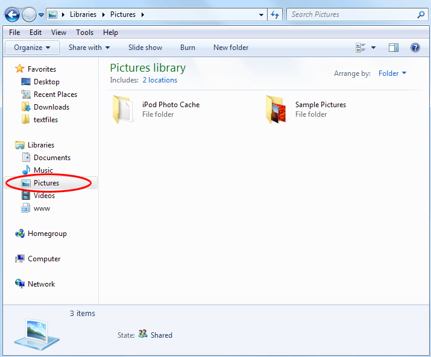 On the right, you'll see folders that are in this library. Windows 7 has some Sample Pictures in this library. But you can add your own, and create folders for them. Create a folder by clicking the New Folder button at the top: 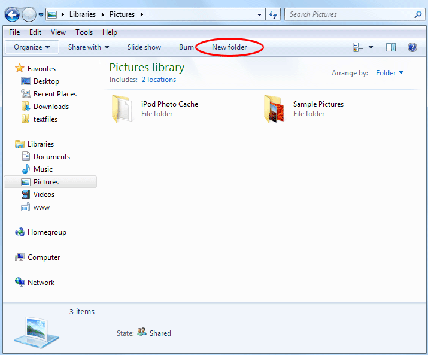 The new folder appears, with blue highlighted text: 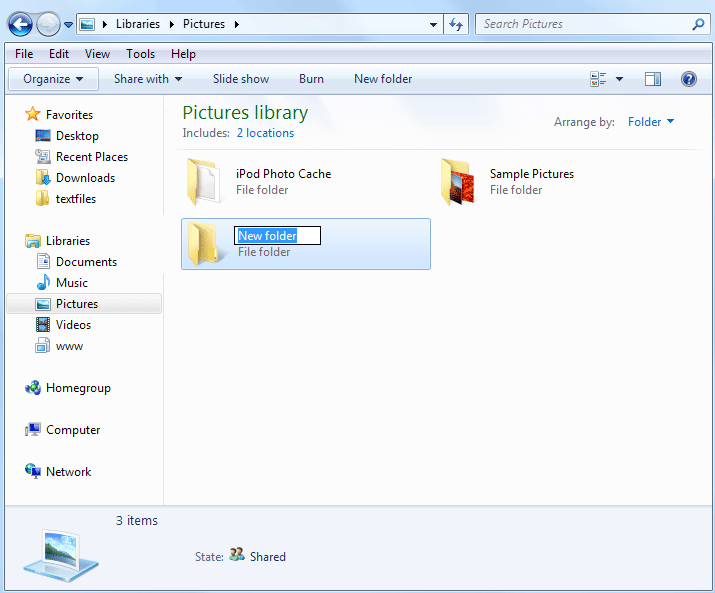 The blue highlight means that you can go ahead and type a new name for that folder. In the image below, we've changed the name to York: 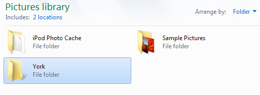 If you've clicked away from the new folder, click back on to it once with your left mouse button. Pause for a second or two and then click again with your left mouse button. It should turn blue again. If it doesn't, right click the new folder and select "Rename" from the menu that appears. Now that you have a new folder, you need to add some images to it. Use the Navigation pane on the left to navigate to a location on your computer where you have some image. In the image below, we've found some images on our Network drive. (If you have a images on a USB stick or data card, insert it and then click Computer. Your USB stick or data card should show up there as a drive.) 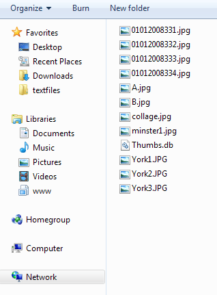 If you're not sure where you have any images, look inside of your Downloads folder, or your Documents folder: 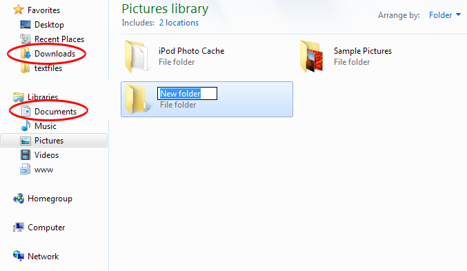 Once you've found some images, select the ones you want to add to your new folder. To select one image, simply click it with your left mouse button. To select more than one image, hold down the left CTRL key on your keyboard. With the CTRL key held down, click each file you want to add. If you've made a mistake, click the file again to deselect it. Once you have selected your images, right click on any
of them. From the menu that appears select Copy: 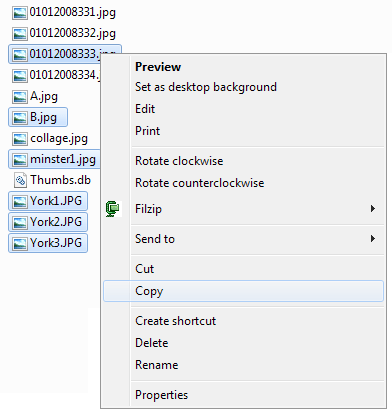 Now navigate back to the new folder you've just created in the Pictures library. Double click the new folder to move inside of it. You should see a message on the right saying "this folder is empty". Right click anywhere inside of the big white area, and right-click again. From the menu, select Paste: 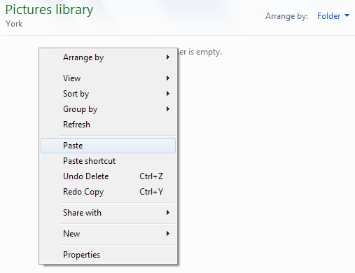 The images will be copied and pasted over to the new folder: 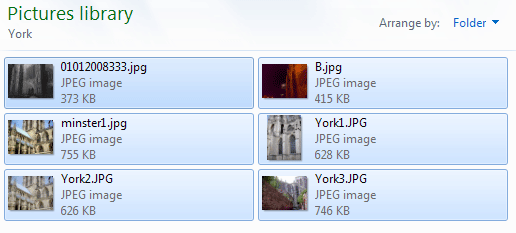 If your pictures are not showing as thumbnails like ours, click the icon and arrow circled in red below: 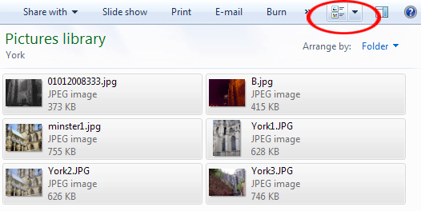 From the menu, select Tiles. (But click each one in turn to see what they do): 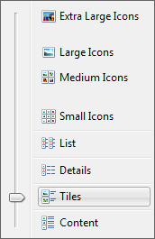 Now that you have some images in the folder, you can add some information to them. We'll do that in the next section.
Adding information to an Image --> |
|||||
|